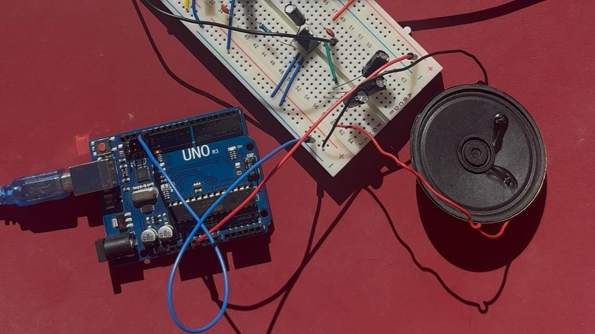
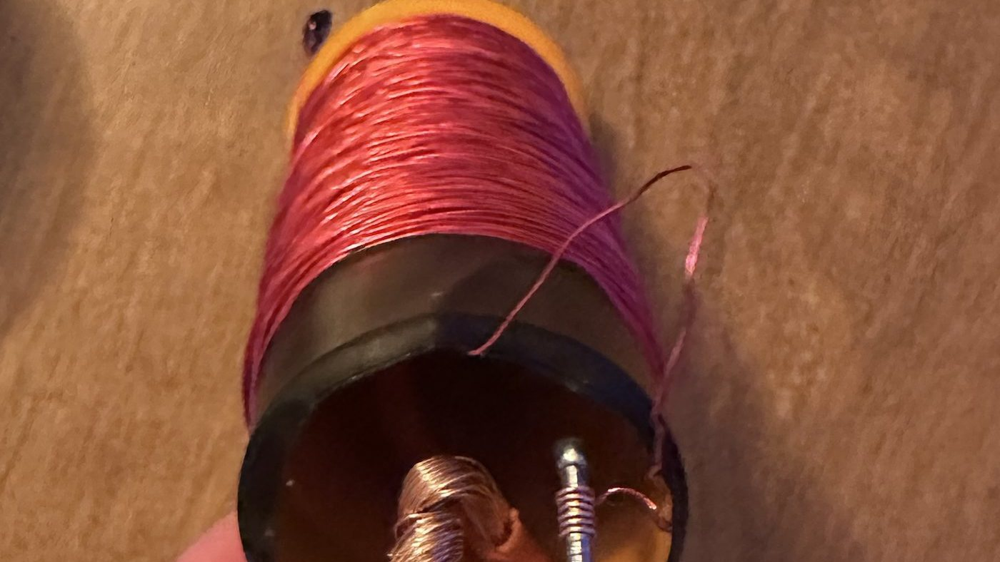
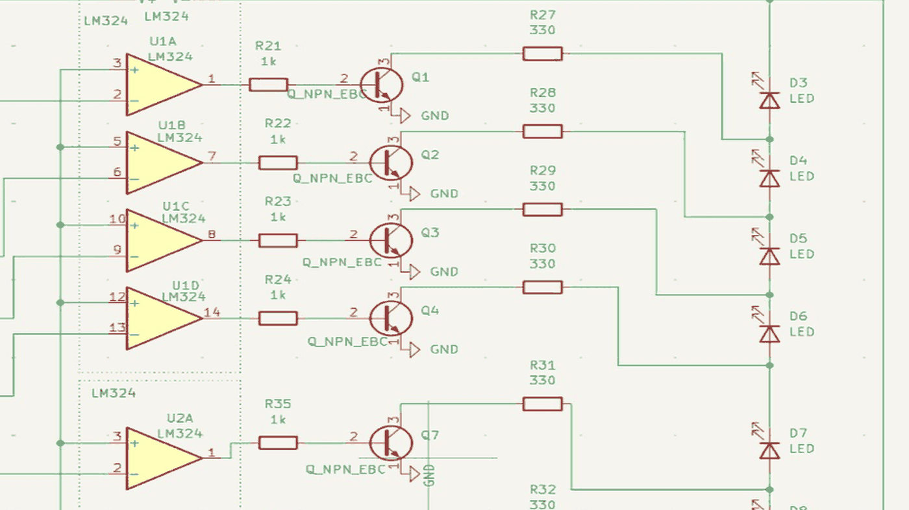
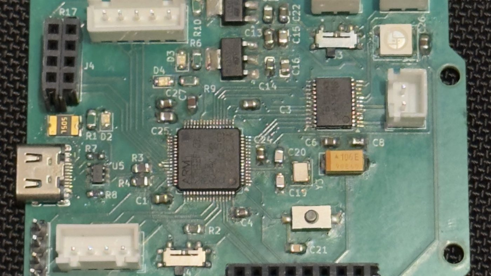
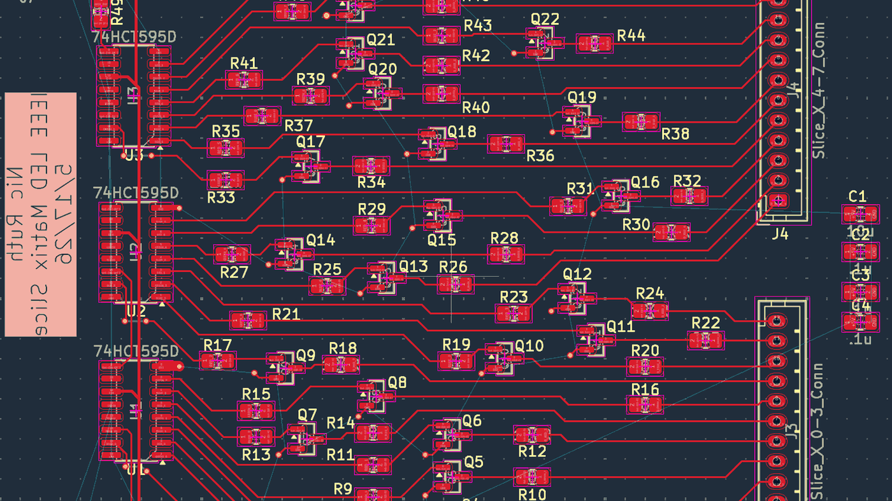

Electromagnetic Rail Launcher
A 13,200 µF capacitor bank charged to 225 V from an 11.1 V LiPo, about 330 J. Twelve series resistors, picked for their wattage, keep inrush to 85 mA.
A mix of class projects and my own. Some were built and some only got as far as a design, and each page says which. Several have design files on GitHub.
A 13,200 µF capacitor bank charged to 225 V from an 11.1 V LiPo, about 330 J. Twelve series resistors, picked for their wattage, keep inrush to 85 mA.

Measured the silicon bandgap (1.31 eV) and Boltzmann's constant (1.56 × 10⁻²³ J/K) with one transistor, a 9 V battery and a multimeter, then used them to build a flat voltage reference.

Redesigned a high-altitude balloon payload after two of its four sensors were discontinued. The design comes to 120 g and $115, under the 200 g and $147 limits. Not built.

An all-analog instrument with no microcontroller: an astable oscillator, pitch control by light or voltage, a slow modulator and an LM386 output. I checked every stage on the scope.

A receiver built from discrete parts on a breadboard, with a hand-wound coil, a transistor RF stage and an LM386 driving a speaker. It picked up one station and not much else, so most of the write-up is about why.

A capacitor-discharge EMP generator: a 9 V high-voltage step-up converter charges a 20 kV ceramic capacitor bank, discharged through a hand-wound coil to produce a pulsed magnetic field.

Eight LM324 comparators against a resistor ladder, lighting an eight-LED bar for battery voltage measured under a 20 Ω load. The schematic is done, but the term ended before I got to layout.

An Uno shield with a 10-bit R-2R ladder DAC, buffered out to a 3.5 mm jack, so the Uno can output audio. It also has headers for an MPU6050 and an SSD1306 OLED, plus pots and buttons. Fabricated and hand-soldered.

An STM32F401 control board I designed and hand-soldered, including the 64-pin QFP. You drive it from a phone browser over the ESP8266's own WiFi, and it streams IMU data back.

One slice of the DU IEEE chapter's LED cube. Three daisy-chained 74HCT595 shift registers drive 24 transistor cathode sinks, so eight RGB columns run off a five-wire bus.